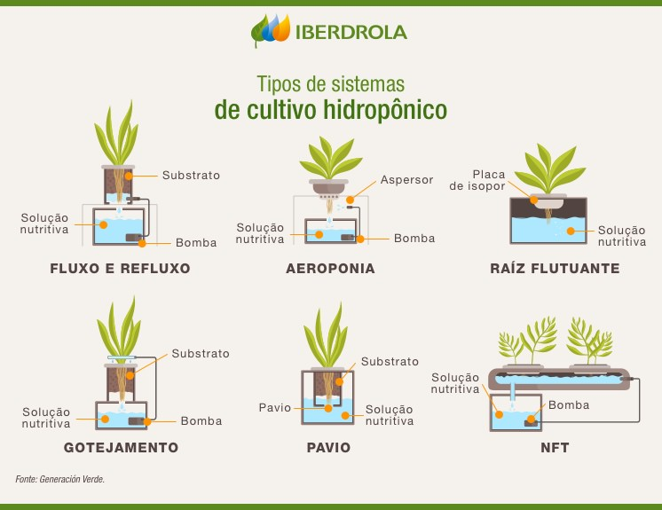

Oque é Hidroponia?
A hidroponia é uma técnica de cultivo de plantas sem uso de solo.
Vantagens da Hidroponia
Uso eficiente da água
Crescimento mais rápido das plantas
Menos pragas e doenças
Tipos de Sistemas Hidropônicos
Existem vários sistemas, como as imagens abaixo.
Retirado do site https://www.iberdrola.com/sustentabilidade/o-que-e-hidroponia-e-vantagens